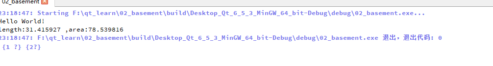
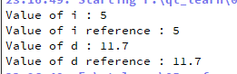
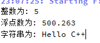
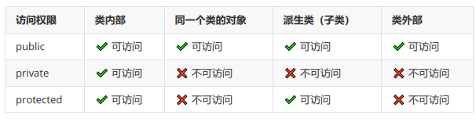
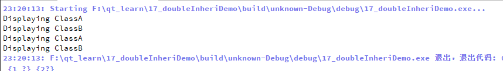
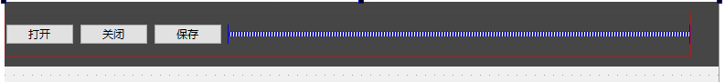
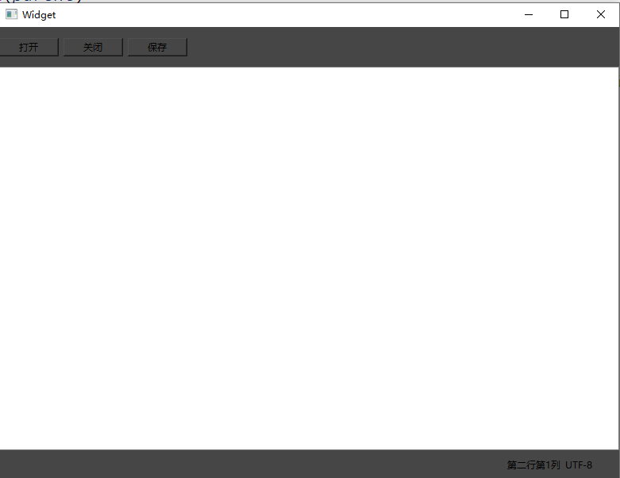

QT学习 C++基础 命名空间 自定义命名空间。
1 2 3 4 5 6 7 8 9 10 11 12 13 14 15 #ifndef CIR_H #define CIR_H namespace Cir {const double PI = 3.141592653 ;double areaOfCircle (double radius) return PI*radius*radius; } double lenthOfCircle (double radius) return 2 *PI*radius; } } #endif
1 2 3 4 5 6 7 8 9 10 11 12 13 14 #include <iostream> #include "stdio.h" #include "cir.h" using namespace std;int main () double myRadius =5 ; cout << "Hello World!" << endl; printf ("length:%lf ,area:%lf\n" ,Cir::lenthOfCircle (myRadius),Cir::areaOfCircle (myRadius)); return 0 ; }

法二：
1 2 3 4 5 6 7 8 9 10 11 12 13 14 15 #include <iostream> #include "stdio.h" #include "cir.h" using namespace std;using namespace Cir;int main () double myRadius =5 ; cout << "Hello World!" << endl; printf ("length:%lf ,area:%lf\n" ,lenthOfCircle (myRadius),areaOfCircle (myRadius)); return 0 ; }
Lambda 1 2 3 4 5 6 7 8 9 10 11 12 13 14 15 16 17 18 19 20 21 22 23 24 25 26 27 28 29 30 31 32 33 34 35 36 37 38 39 40 41 42 43 44 45 46 47 48 49 50 51 52 53 54 55 56 57 58 59 60 61 62 63 64 65 66 67 68 69 70 71 72 73 74 75 76 77 78 #include <iostream> using namespace std;int add (int a,int b) return a+b; } bool compare (int a,int b) return a>b; } int getMax (int a,int b,bool (*pcompare)(int a,int b)) if (pcompare (a,b)) { return a; }else { return b; } } int main () int x =100 ; int y=10 ; int res=add (x,y); cout << res << endl; auto add=[](int a,int b)->int { return a+b; }; res=add (10 ,80 ); cout << res << endl; int max =getMax (10 ,20 ,compare); cout << max << endl; int max1 =getMax (10 ,20 , [](int a,int b)->bool { return a>b; }); cout << max1 << endl; x=10 ; y=20 ; int z =20 ; auto add1=[x,y]()->int { return x+y; }; int ret =add1 (); cout << ret << endl; auto mul=[=]()->int { return x*y*z; }; ret =mul (); cout << ret << endl; auto modifyMul=[&]()->int { x=15 ; return x*y*z; }; ret =modifyMul (); cout << ret << endl; cout<<x<<endl; return 0 ; }
类与对象 案例需求：
银行的账户是一个模板，是一个类，有存款人信息和账户额度，而具体的存款人视为一个对象， 一个对象不能私自修改账户额度，需要通过一个操作流程，比如去ATM或者柜台进行操作才能修改 到账户额度， 所以，存款人信息和账户额度设计成私有权限，通过公有的操作流程，也就是公有函数去操作私有 变量。 基于这个场景，我们编程实现代码
1 2 3 4 5 6 7 8 9 10 11 12 13 14 15 16 17 18 19 20 21 22 23 24 25 26 27 28 29 30 31 32 33 34 35 36 37 38 39 40 41 42 43 44 45 46 47 48 49 50 51 52 53 54 55 56 57 58 59 60 61 62 63 64 65 66 67 68 69 70 71 72 73 #include <iostream> #include <string.h> using namespace std;class BankAccount {private : string name; string addr; int age; double balance; public : void registerMes (string newName,string newAddr,int age,double balance) void withDraw (double amount) void deposit (double amount) double getBalance () void printUserInfo () }; void BankAccount::printUserInfo () string mesTem = "账户名：" + name + "，地址：" + addr + ",年龄：" + std::to_string (age) + ",存款：" + std::to_string (balance); cout << mesTem << endl; } void BankAccount::registerMes (string newName, string newAddr,int newAge,double newBalance) name = newName; addr = newAddr; age = newAge; balance = newBalance; } void BankAccount::deposit (double amount) if (amount > 0 ) { balance += amount; } else { cerr << "Deposit amount must be positive." << endl; } } void BankAccount::withDraw (double amount) if (amount > balance) { cerr << "Insufficient funds." << endl; } else if (amount <= 0 ) { cerr << "Withdrawal amount must be positive." << endl; } else { balance -= amount; } } double BankAccount::getBalance () return balance; } int main () BankAccount user1; user1.registerMes ("老陈" ,"深圳光明区" ,35 ,100 ); user1.printUserInfo (); user1.deposit (1000 ); cout << user1.getBalance () << endl; user1.withDraw (30 ); cout << user1.getBalance () << endl; return 0 ; }
引用 引用与指针的区别：
不存在空引用。引用必须连接到一块合法的内存。
一旦引用被初始化为一个对象，就不能被指向到另一个对象。指针可以在任何时候指向到另一个对象。
引用必须在创建时被初始化。指针可以在任何时间被初始化。
官方没有明确说明，但是引用确实不是传统意义上的独立变量，它不能“变”嘛
1 2 3 4 5 6 7 8 9 10 11 12 13 14 15 16 17 18 19 #include <iostream> using namespace std;int main () int i; double d; int & r = i; double & s = d; i = 5 ; cout << "Value of i : " << i << endl; cout << "Value of i reference : " << r << endl; d = 11.7 ; cout << "Value of d : " << d << endl; cout << "Value of d reference : " << s << endl; return 0 ; }

引用作为返回值
1 2 3 4 5 6 7 8 9 10 11 12 13 14 15 16 17 18 19 20 21 22 23 24 25 26 #include <iostream> using namespace std;double vals[] = {10.1 , 12.6 , 33.1 , 24.1 , 50.0 };double & setValues (int i) double & ref = vals[i]; return ref; } int main () cout << "改变前的值" << endl; for ( int i = 0 ; i < 5 ; i++ ) { cout << "vals[" << i << "] = " ; cout << vals[i] << endl; } setValues (1 ) = 20.23 ; setValues (3 ) = 70.8 ; cout << "改变后的值" << endl; for ( int i = 0 ; i < 5 ; i++ ) { cout << "vals[" << i << "] = " ; cout << vals[i] << endl; } return 0 ; }
函数重载 1 2 3 4 5 6 7 8 9 10 11 12 13 14 15 16 17 18 19 20 21 22 23 24 25 26 27 28 #include <iostream> using namespace std;class printData { public : void print (int i) cout << "整数为: " << i << endl; } void print (double f) cout << "浮点数为: " << f << endl; } void print (char c[]) cout << "字符串为: " << c << endl; } }; int main (void ) printData pd; pd.print (5 ); pd.print (500.263 ); char c[] = "Hello C++" ; pd.print (c); return 0 ; }

运算符重载 1 2 3 4 5 6 7 8 9 10 11 12 13 14 15 16 17 18 19 20 21 22 23 24 25 26 27 28 29 #include <iostream> using namespace std;class Person { public : string name; int age; bool operator ==(Person pTemp); }; bool Person::operator ==(Person pTemp){ return pTemp.name==name&&pTemp.age==age; } int main () Person p1; p1.name="zhangsan" ; p1.age=8 ; Person p2; p2.name="zhangsan" ; p2.age=8 ; bool ret = p1 ==p2; cout << ret << endl; return 0 ; }
构造函数 构造成员变量的初始化值，内存空间等
1 2 3 4 5 6 7 8 9 10 11 12 13 14 15 16 17 18 19 20 21 22 23 24 25 26 27 28 29 30 31 32 33 34 35 36 #include <iostream> using namespace std;class Car {public : string brand; int year; Car () { brand = "未知" ; year = 0 ; cout << "无参构造函数被调用" << endl; } Car (string b, int y) { brand = b; year = y; } void display () cout << "Brand: " << brand << ", Year: " << year << endl; } }; int main () Car myCar; myCar.display (); Car myCar1 ("Toyota" , 2020 ) ; myCar1.display (); return 0 ; }
参数列表构造
1 2 3 4 5 6 7 8 public : string brand; int year; string type; Car (string b ,int y ,string t):brand (b),type (t),year (y){ cout << "参数列表构造" << endl; }
this关键字 在 C++ 中， this 关键字是一个指向调用对象的指针。它在成员函数内部使用，用于引用调用该函数的 对象。使用 this 可以明确指出成员函数正在操作的是哪个对象的数据成员。下面是一个使用 Car 类来 展示 this 关键字用法的示例：
1 2 3 4 5 6 7 8 9 10 11 12 13 14 15 16 17 18 19 20 21 22 23 24 25 26 27 28 29 30 31 32 33 34 35 36 #include <iostream> #include <string> using namespace std;class Car {private : string brand; int year; public : Car (string brand, int year) { this ->brand = brand; this ->year = year; } void display () const cout << "Brand: " << this ->brand << ", Year: " << this ->year << endl; } Car& setYear (int year) { this ->year = year; return *this ; } }; int main () Car car ("宝马" ,2024 ) ; car.display (); car.setYear (2023 ).display (); return 0 ; }
析构函数 析构函数是C++中的一个特殊的成员函数，它在对象生命周期结束时被自动调用，用于执行对象销毁前的 清理工作。析构函数特别重要，尤其是在涉及动态分配的资源（如内存、文件句柄、网络连接等）的情况下。
静态成员变量 静态成员变量
定义：静态成员变量是类的所有对象共享的变量。与普通成员变量相比，无论创建了多少个类的实 例，静态成员变量只有一份拷贝。
初始化：静态成员变量需要在类外进行初始化，通常在类的实现文件中。
访问：静态成员变量可以通过类名直接访问，不需要创建类的对象。也可以通过类的对象访问。
用途：常用于存储类级别的信息（例如，计数类的实例数量）或全局数据需要被类的所有实例共享。
静态成员函数 1. 定义：静态成员函数是可以不依赖于类的实例而被调用的函数。它不能访问类的非静态成员变量和 非静态成员函数。 2. 访问：类似于静态成员变量，静态成员函数可以通过类名直接调用，也可以通过类的实例调用。 3. 用途：常用于实现与具体对象无关的功能，或访问静态成员变量。
1 2 3 4 5 6 7 8 9 10 11 12 13 14 15 16 17 18 19 20 21 22 23 24 25 26 27 28 29 30 31 32 33 34 35 36 37 38 39 40 41 42 43 #include <iostream> using namespace std;class Myclass { private : static int staticNumofInstance; public : Myclass () { staticNumofInstance++; } static int getNumofInstance () return staticNumofInstance; } ~Myclass (){ staticNumofInstance--; } }; int Myclass::staticNumofInstance =0 ;int main () Myclass m1; cout<<Myclass::getNumofInstance ()<<endl; Myclass m2; cout<<Myclass::getNumofInstance ()<<endl; Myclass m3; cout<<Myclass::getNumofInstance ()<<endl; Myclass *m4=new Myclass; cout<<Myclass::getNumofInstance ()<<endl; delete m4; cout<<Myclass::getNumofInstance ()<<endl; return 0 ; }
继承 继承是面向对象编程（OOP）中的一个核心概念，特别是在C++中。它允许一个类（称为派生类或子 类）继承另一个类（称为基类或父类）的属性和方法。继承的主要目的是实现代码重用，以及建立一种 类型之间的层次关系。

1 2 3 4 5 6 7 8 9 10 11 12 13 14 15 16 17 18 19 20 21 22 23 24 25 26 27 28 29 30 31 32 33 34 35 36 37 38 #include <iostream> using namespace std;class Vehicle { public : string type; string contry; string color; double price; int numOfWheel; void run () cout << "车跑起来了" << endl; } void stop () }; class Bickle : public Vehicle{}; class Roadster : public Vehicle{ public : int stateOfTop; void openTopped () void pdrifting () }; int main () Roadster ftype; ftype.type = "捷豹Ftype" ; ftype.run (); Bickle bike; bike.type = "死飞" ; bike.run (); return 0 ; }
分文件编写继承 animal.h
1 2 3 4 5 6 7 8 9 10 11 12 13 14 15 16 17 18 19 #ifndef ANIMAL_H #define ANIMAL_H #include <string> using namespace std;class Animal { public : string name; int age; Animal (); void makesound () void eat () }; #endif
animal.cpp
1 2 3 4 5 6 7 8 9 10 11 12 13 #include "animal.h" Animal::Animal () {} void Animal::makesound () cout<<"动物叫" <<endl; } void Animal::eat () cout<<"动物吃" <<endl; }
mian.cpp
1 2 3 4 5 6 7 8 9 10 11 12 13 14 #include "animal.h" #include "lion.h" using namespace std;int main () Animal a; a.makesound (); a.eat (); Lion l; l.hunting (); return 0 ; }
Lion.h
1 2 3 4 5 6 7 8 9 10 11 12 13 14 15 #ifndef LION_H #define LION_H #include "animal.h" class Lion : public Animal{ public : int sleeptime; Lion (); void hunting () }; #endif
Lion.cpp
1 2 3 4 5 6 7 8 9 #include "lion.h" Lion::Lion () {} void Lion::hunting () cout<<"狮子捕猎" <<endl; }
基类构造函数 在C++中，派生类可以通过其构造函数的初始化列表来调用基类的构造函数。这是在构造派生类对象时初 始化基类部分的标准做法。 当创建派生类的对象时，基类的构造函数总是在派生类的构造函数之前被调用。如果没有明确指定，将 调用基类的默认构造函数。如果基类没有默认构造函数，或者你需要调用一个特定的基类构造函数，就 需要在派生类构造函数的初始化列表中明确指定。
1 2 3 4 5 6 7 8 9 10 11 12 13 14 15 16 17 18 19 20 21 22 23 #include <iostream> using namespace std;class Base {public : int data; Base (int x) { std::cout << "Base constructor with x = " << x << std::endl; } }; class Derived : public Base {public : double ydata; Derived (int x, double y) : Base (x) { std::cout << "Derived constructor with y = " << y << std::endl; } }; int main () Derived obj (10 , 3.14 ) ; return 0 ; }
虚函数 一般在基类，允许派生类重写1该函数，实现多态，可通过override进行实现
1 2 3 4 5 6 7 8 9 10 11 12 13 14 15 16 17 18 19 20 21 22 23 24 25 26 27 28 29 30 31 32 #include <iostream> using namespace std;class Vehicle { public : string type; string contry; string color; double price; int numOfWheel; virtual void run () cout << "车跑起来了" << endl; } void stop () }; class Bike :public Vehicle{public : void run () override cout << "脚踩自行车" << endl; } }; int main () Bike b; b.run (); return 0 ; }
多重继承 在C++中，多重继承是一种允许一个类同时继承多个基类的特性。这意味着派生类可以继承多个基类的属 性和方法。多重继承增加了语言的灵活性，但同时也引入了额外的复杂性，特别是当多个基类具有相同 的成员时。
1 2 3 4 5 6 7 8 9 10 11 12 13 14 15 16 17 18 19 20 21 22 23 24 25 26 27 28 29 30 #include <iostream> using namespace std;class ClassA {public : void displayA () std::cout << "Displaying ClassA" << std::endl; } }; class ClassB {public : void displayB () std::cout << "Displaying ClassB" << std::endl; } }; class Derived : public ClassA, public ClassB {public : void display () displayA (); displayB (); } }; int main () Derived obj; obj.displayA (); obj.displayB (); obj.display (); return 0 ; }

QT记事本项目 按键布局 
弹簧，水平布局，和Frame进行背景设置
窗口自适应调整
1 2 3 4 5 6 7 8 9 Widget::Widget (QWidget *parent) : QWidget (parent) , ui (new Ui::Widget) { ui->setupUi (this ); this ->setLayout (ui->verticalLayout); }
